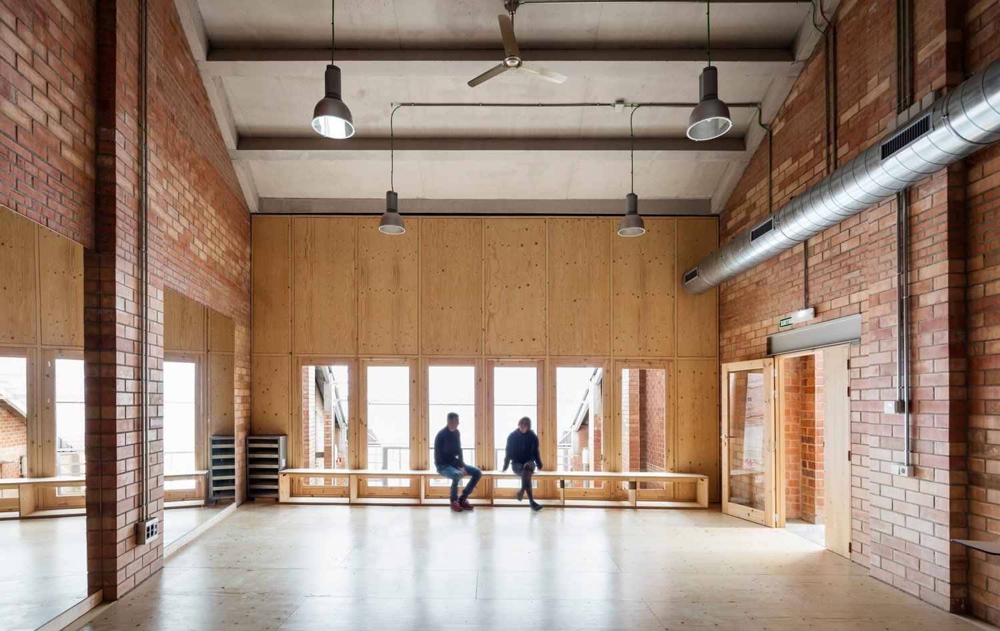
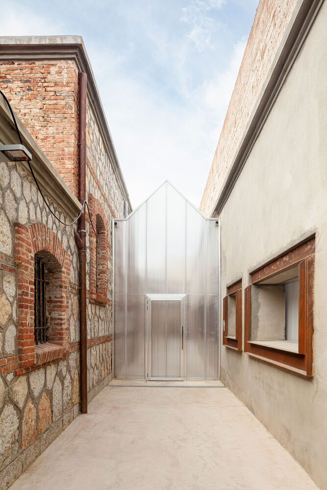
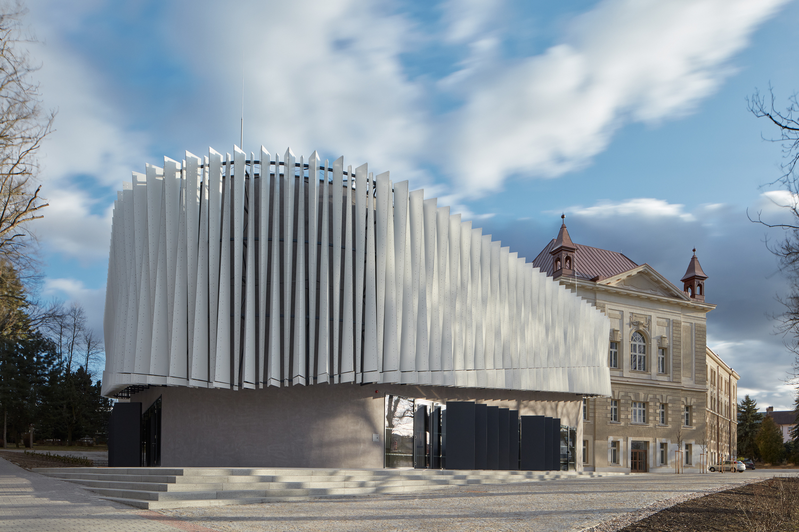
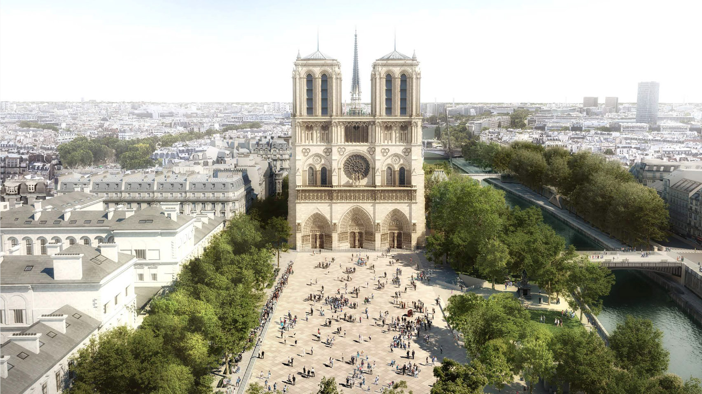

"一場毀滅性的大火摧毀了擁有數百年歷史的巴黎聖母院，重建這座神聖建築的人們面臨著一項艱鉅的任務：將中世紀、19世紀和現代三個建築時代的風格和創新融為一體。"
火災中重生的過去和現在
Notre-Dame de Paris


Area/
1750m²
Completion/
2017

Area/
1323m²
Completion/
2022

Area/
3675m²
Completion/
2019
"一場毀滅性的大火摧毀了擁有數百年歷史的巴黎聖母院，重建這座神聖建築的人們面臨著一項艱鉅的任務：將中世紀、19世紀和現代三個建築時代的風格和創新融為一體。"
Notre-Dame de Paris

當一個地區的溫度、濕度、地形不同時，空氣開始流動形成風。
當一棟建築的家人、習慣、狀態更迭時，空間開始流動需要再生。
空間的再生不一定要打掉重來，而是延續。
因為建築代表的並不單純是物件，它承載著時間、文化還有生活，或許人們更應該優先討論的是，這次我們想要把什麼傳承下去？
—— 工法、講究，還是情感
接著透過建築將意念印記在歷史的時間軸線中。

我們一起
建築空間的下趟旅程